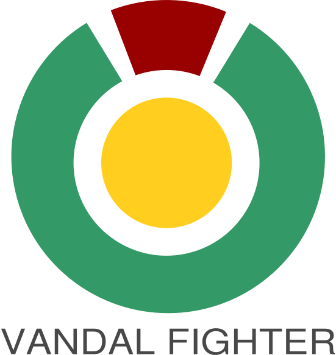

|  |
{{Version}} Vandal Fighter is software that watches Wikipedia edits in real-time and has many built-in filters to allow users to specify exactly what types of information they would like to see. Vandal Fighter is licenced under GNU GPL 2.0. |
Team:
Original Maintaners note:
|
Copyright (C) 2005 Derek Williams aka CryptoDerk see http://www.derk.org/cdvf/license.txt. This is free software, and you are welcome to redistribute it under certain conditions; see http://www.derk.org/cdvf/license.txt Program website: http://cdvf.derk.org/ Author's website: http://www.derk.org/ Licensed under GNU GPL 2.0 Additional authors: |